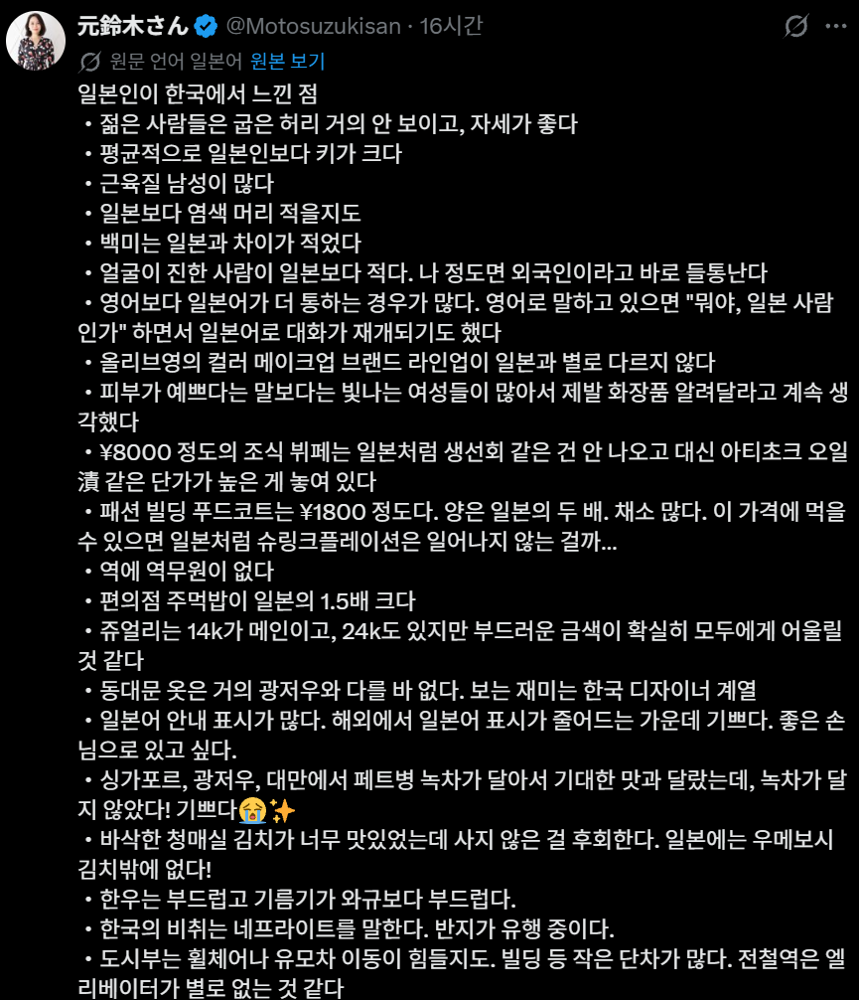

일본 여자가 느낀 한국
댓글
우리나라에 병녹차 라인업이 거의 없는데 뭘 마신거지
보성녹차
일본가면 느끼는게
진짜 키가 작더라 수치상으로는 평균키 차이가 그렇게 많이 나나? 싶은데
실질적으로 느껴지는건 더작더라
남자보다도 여자들이 진짜 작은 느낌
172여자의 눈에 일본 남성 정수리가 보일정도니....
전체적으로 재밌게 놀고 간듯
또 오시길
영어는 시바ㅋㅋㅋ 니들 영어 존나 못하자나ㅋㅋ
그거랑 상관없이 우리도 해외가서 영어로 씨부리지 그나라말 안쓰잖아 일본인도 한국어모르니 당연히 영어로 먼저 말하지;
8000엔이면 8만원 조식이야? 비싼데
비..치...?
한우가 와규보다 맛있는건 사실인듯.
마지막 글은 많은 외국인들이 말하는 부분이네
배리어 프리 부분은 손봐야 하는 부분이긴 함. 조모님 거동 불편해지신 뒤로 휠체어 타시는데 꽤 강하게 개선할 필요성이 느껴지더라.
근데 전장연이 그 주제 가지고 개 깽판을 쳐 놔서...ㅅㅂ
확실히 이쁘다 못생겼다를 떠나서 일본특유의 진한얼굴이 있긴함.
쿠드아이노마끄도나루도
뭐야 일본인인가? 니혼징 데스까? 나니?
8천엔 조식에서 나도 모르게 8천원짜리 한식뷔페로 이해해 버렸다.....ㅠ
영어보다 일본어가 더 통하는경우는 열도이외 어느지역도 없을텐데
청매실김치는 대체 뭐냐?
8000엔 조식이면 회 나와야되는거 아니야?!